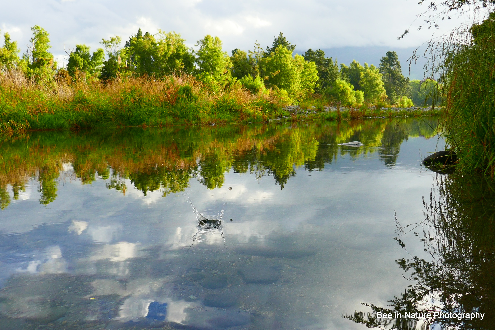

Рідний край
Рідний край
Рідний край — це рідна земля, місце, де ти народився та пройшли твої дитячі роки. Це та вулиця, той будинок, з якого щоранку біжиш до школи й куди повертаєшся. Там вільно дихається, там легко й радісно жити. І не важливо, чи буде це хатина в тайзі, шістнадцятиповерховий велетень на березі великої ріки або юрта в далекій тундрі.
кнопки
Картинки

- 